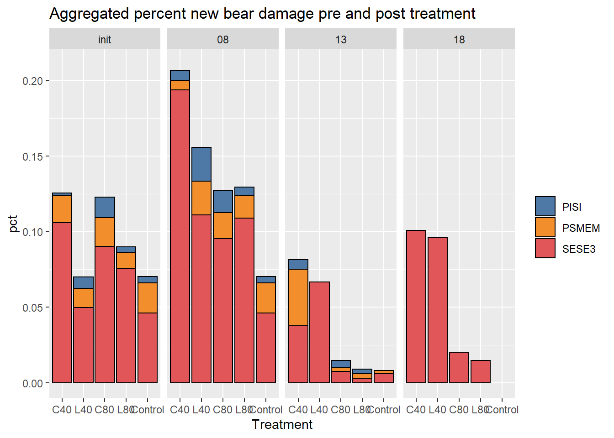
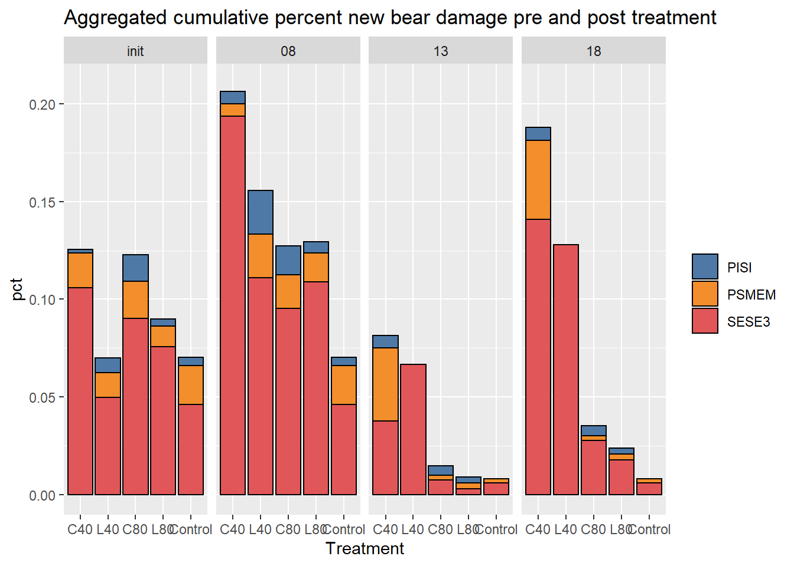
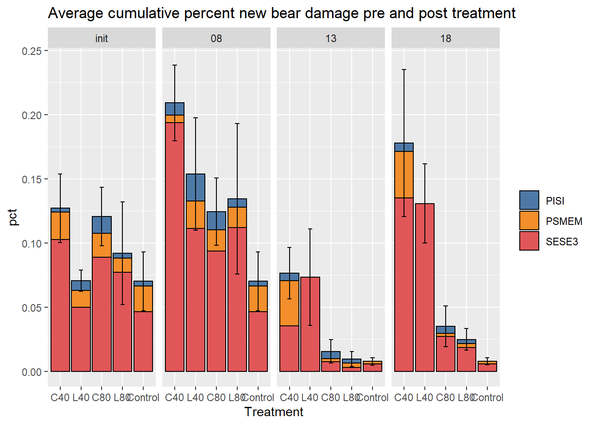
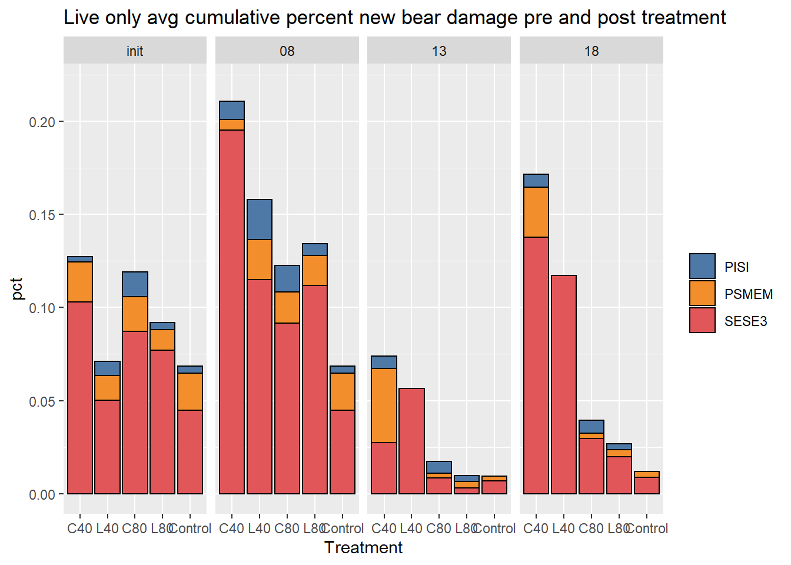
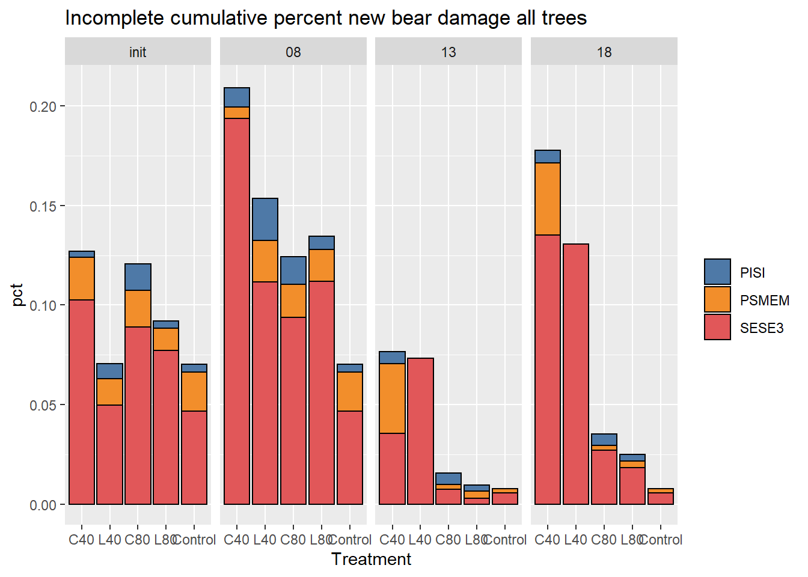
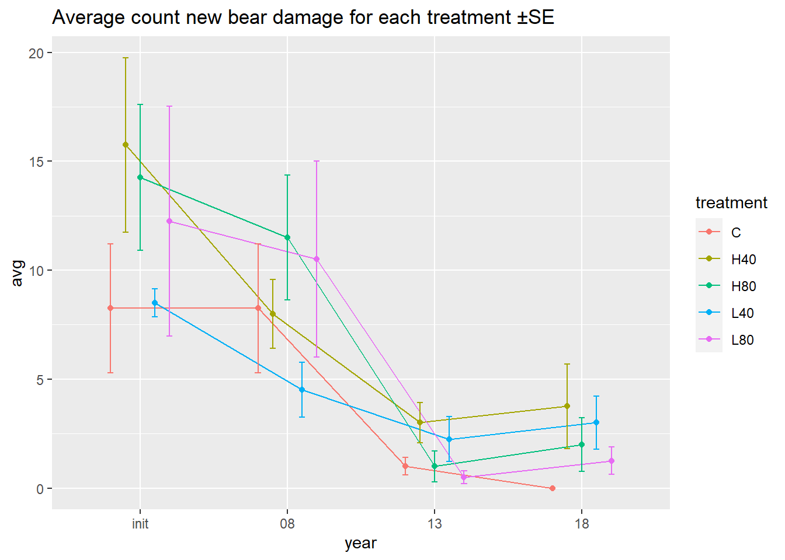
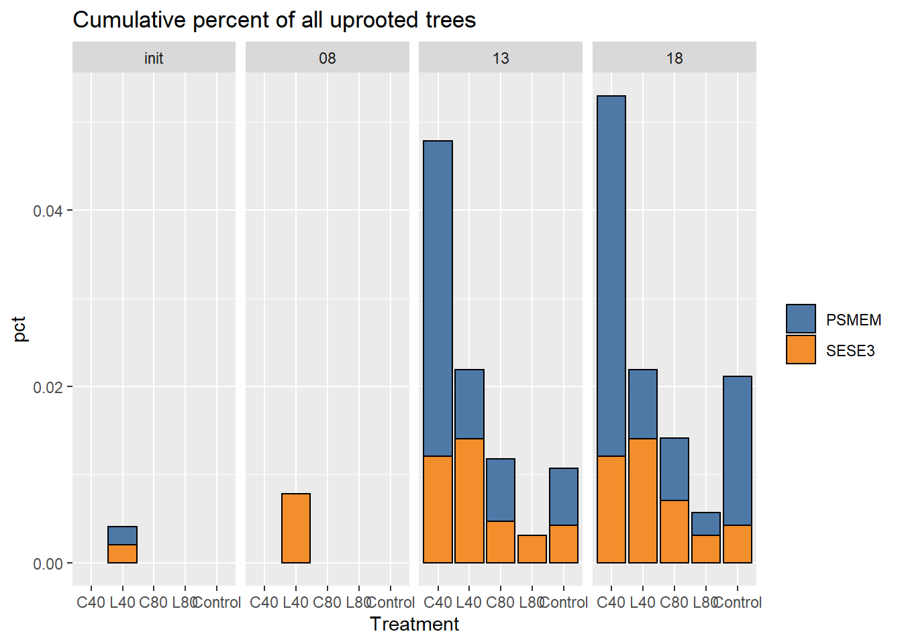

Bear and other damage
print(knitr::current_input())## [1] "09_damage.rmd"require(tidyverse)
library(performance)Bear damage
data cleaning
I previously only looked at live trees, this underestimates damage because observations are ommited from counts of cumulative damage. I’m now including all tree records in the analysis, so estimates represent total amounts of post-treatment trees damaged by bears, some of these trees may no longer be in the stand, but they were still damaged by bears at one point.
d_l$year <- factor(d_l$year, ordered = FALSE)
bd <- d_lThere are trees with “healed over” in the notes, most of these are in 2008. It makes sense if these trees are subsequently listed as not bear damaged.
I’m assuming that any tree that goes from bear damaged in 2008 to not bear damaged in 2013 is in fact healed and that any damage in 2018 is new damage.
# # Use this to look at any "healed" trees
# bd %>%
# group_by(tree_id) %>%
# filter(any(str_detect(tolower(notes), "healed"))) %>%
# color_groups()In looking at notes, trees trees that have “old bear damage” recorded are treated inconsistently, some are recorded with bear damage, some without. I’ll assume that trees recorded as not bear damaged are either undamaged or completely healed, and subsequent damage implies a new bear incidence of bear damage.
# # Use this to look at any "old bd" trees
# bd %>%
# group_by(tree_id) %>%
# filter(any(str_detect(tolower(notes), "old"))) %>%
# color_groups()Are there trees that are recorded as bear damaged in one period and then not in the next period? Put another way, are bear damaged trees dropped from the list for one reason or another?
There are 77 trees that are dropped (2013 and 2018), of these, 14 are subsequently listed as (re-) damaged (all in 2018). As stated above, I will consider these valid occurrences of new damage. 16 of the “dropped” trees were because of death (no longer recording bear damage).
bear_dropped <- bd %>%
group_by(tree_id) %>%
mutate(bear_dropped = lag(bear) & !bear) %>%
filter(any(bear_dropped)) %>%
mutate(id = cur_group_id()) %>%
relocate(id) %>%
arrange(id)
# # all dropped bear damage trees occur in 2013
# filter(bear_dropped, bear_dropped) %>% pull(year) %>% unique()
# color_groups(bear_dropped)
# trees that are re-attacked
bear_dropped %>%
filter(any(bear & !lag(bear))) %>%
mutate(id = cur_group_id(), .before = 1) %>%
color_groups()| id | plot | treatment | tree_id | spp | h_dist | azi | year | dbh | ht | cr | status | bear | rot | notes | cc | cond | live | ba | d_inc2 | ht_inc2 | ba_inc2 | d_inc1 | ht_inc1 | ba_inc1 | x | y | sdi_plot | ht_p | bear_dropped |
|---|---|---|---|---|---|---|---|---|---|---|---|---|---|---|---|---|---|---|---|---|---|---|---|---|---|---|---|---|---|
| 1 | 2H40 | H40 | 2H40.3066 | SESE3 | 5.486 | 174 | init | 58.166 | 25.907 | 20 | 1 | TRUE | FALSE | X | NA | TRUE | 2657.225 | NA | NA | NA | 0.000 | 0.000 | 0.000 | 410018.6 | 4567413 | 1706.229 | 25.907 | FALSE | |
| 1 | 2H40 | H40 | 2H40.3066 | SESE3 | 5.486 | 174 | 08 | 58.166 | 25.907 | 20 | 1 | TRUE | FALSE | X | NA | TRUE | 2657.225 | 0.000 | 0.000 | 0.000 | 1.016 | -0.183 | 96.882 | 410018.6 | 4567413 | 710.770 | 25.907 | FALSE | |
| 1 | 2H40 | H40 | 2H40.3066 | SESE3 | 5.486 | 174 | 13 | 63.246 | 24.992 | 25 | 1 | FALSE | NA | broken top (leader); connected at base with 3067 | 3 | 3,6 | TRUE | 3141.637 | 1.016 | -0.183 | 96.882 | 1.829 | 0.731 | 194.819 | 410018.6 | 4567413 | 804.925 | 24.992 | TRUE |
| 1 | 2H40 | H40 | 2H40.3066 | SESE3 | 5.486 | 174 | 18 | 72.390 | 28.650 | 50 | 1 | TRUE | NA | NA | NA | 3,6,17 | TRUE | 4115.731 | 1.829 | 0.731 | 194.819 | NA | NA | NA | 410018.6 | 4567413 | 982.710 | 28.650 | FALSE |
| 2 | 2H40 | H40 | 2H40.3067 | SESE3 | 4.938 | 174 | init | 44.830 | 26.516 | 20 | 1 | TRUE | FALSE | X | NA | TRUE | 1578.437 | NA | NA | NA | 0.000 | 0.000 | 0.000 | 410018.5 | 4567413 | 1706.229 | 26.516 | FALSE | |
| 2 | 2H40 | H40 | 2H40.3067 | SESE3 | 4.938 | 174 | 08 | 44.830 | 26.516 | 20 | 1 | TRUE | FALSE | X | NA | TRUE | 1578.437 | 0.000 | 0.000 | 0.000 | 0.838 | 0.183 | 61.799 | 410018.5 | 4567413 | 710.770 | 26.516 | FALSE | |
| 2 | 2H40 | H40 | 2H40.3067 | SESE3 | 4.938 | 174 | 13 | 49.022 | 27.431 | 20 | 1 | FALSE | NA | connected at base with 3066 | 3 | TRUE | 1887.435 | 0.838 | 0.183 | 61.799 | 1.880 | -0.183 | 158.610 | 410018.5 | 4567413 | 804.925 | 27.431 | TRUE | |
| 2 | 2H40 | H40 | 2H40.3067 | SESE3 | 4.938 | 174 | 18 | 58.420 | 26.516 | NA | 1 | TRUE | NA | NA | NA | 17 | TRUE | 2680.483 | 1.880 | -0.183 | 158.610 | NA | NA | NA | 410018.5 | 4567413 | 982.710 | 26.516 | FALSE |
| 3 | 2H40 | H40 | 2H40.3068 | SESE3 | 13.746 | 190 | init | 39.878 | 27.126 | 25 | 1 | TRUE | FALSE | X | NA | TRUE | 1248.983 | NA | NA | NA | 0.000 | 0.000 | 0.000 | 410015.6 | 4567405 | 1706.229 | 27.126 | FALSE | |
| 3 | 2H40 | H40 | 2H40.3068 | SESE3 | 13.746 | 190 | 08 | 39.878 | 27.126 | 25 | 1 | TRUE | FALSE | X | NA | TRUE | 1248.983 | 0.000 | 0.000 | 0.000 | 1.422 | 0.305 | 97.045 | 410015.6 | 4567405 | 710.770 | 27.126 | FALSE | |
| 3 | 2H40 | H40 | 2H40.3068 | SESE3 | 13.746 | 190 | 13 | 46.990 | 28.650 | 25 | 1 | FALSE | NA | NA | 1 | TRUE | 1734.206 | 1.422 | 0.305 | 97.045 | 1.676 | 0.488 | 134.774 | 410015.6 | 4567405 | 804.925 | 28.650 | TRUE | |
| 3 | 2H40 | H40 | 2H40.3068 | SESE3 | 13.746 | 190 | 18 | 55.372 | 31.088 | NA | 1 | TRUE | NA | NA | NA | 19 | TRUE | 2408.077 | 1.676 | 0.488 | 134.774 | NA | NA | NA | 410015.6 | 4567405 | 982.710 | 31.088 | FALSE |
| 4 | 2H40 | H40 | 2H40.3070 | SESE3 | 11.308 | 202 | init | 36.322 | 25.907 | 30 | 1 | TRUE | FALSE | X | NA | TRUE | 1036.166 | NA | NA | NA | 0.000 | 0.000 | 0.000 | 410013.8 | 4567408 | 1706.229 | 25.907 | FALSE | |
| 4 | 2H40 | H40 | 2H40.3070 | SESE3 | 11.308 | 202 | 08 | 36.322 | 25.907 | 30 | 1 | TRUE | FALSE | X | NA | TRUE | 1036.166 | 0.000 | 0.000 | 0.000 | 1.473 | 0.366 | 92.575 | 410013.8 | 4567408 | 710.770 | 25.907 | FALSE | |
| 4 | 2H40 | H40 | 2H40.3070 | SESE3 | 11.308 | 202 | 13 | 43.688 | 27.735 | 30 | 1 | FALSE | NA | bear damage healed over | 2 | TRUE | 1499.043 | 1.473 | 0.366 | 92.575 | 1.727 | 1.036 | 130.244 | 410013.8 | 4567408 | 804.925 | 27.735 | TRUE | |
| 4 | 2H40 | H40 | 2H40.3070 | SESE3 | 11.308 | 202 | 18 | 52.324 | 32.917 | NA | 1 | TRUE | NA | NA | NA | 17 | TRUE | 2150.264 | 1.727 | 1.036 | 130.244 | NA | NA | NA | 410013.8 | 4567408 | 982.710 | 32.917 | FALSE |
| 5 | 2H40 | H40 | 2H40.3080 | SESE3 | 8.595 | 266 | init | 44.958 | 25.907 | 30 | 1 | TRUE | TRUE | X | NA | TRUE | 1587.464 | NA | NA | NA | 0.000 | 0.000 | 0.000 | 410009.4 | 4567417 | 1706.229 | 25.907 | FALSE | |
| 5 | 2H40 | H40 | 2H40.3080 | SESE3 | 8.595 | 266 | 08 | 44.958 | 25.907 | 30 | 1 | TRUE | TRUE | X | NA | TRUE | 1587.464 | 0.000 | 0.000 | 0.000 | 0.508 | 0.000 | 36.888 | 410009.4 | 4567417 | 710.770 | 25.907 | FALSE | |
| 5 | 2H40 | H40 | 2H40.3080 | SESE3 | 8.595 | 266 | 13 | 47.498 | 25.907 | 25 | 1 | FALSE | NA | NA | 3 | TRUE | 1771.905 | 0.508 | 0.000 | 36.888 | 2.337 | -0.244 | 195.792 | 410009.4 | 4567417 | 804.925 | 25.907 | TRUE | |
| 5 | 2H40 | H40 | 2H40.3080 | SESE3 | 8.595 | 266 | 18 | 59.182 | 24.688 | NA | 1 | TRUE | NA | NA | NA | 19 | TRUE | 2750.864 | 2.337 | -0.244 | 195.792 | NA | NA | NA | 410009.4 | 4567417 | 982.710 | 24.688 | FALSE |
| 6 | 2H40 | H40 | 2H40.3090 | SESE3 | 8.656 | 340 | init | 33.020 | 23.773 | 25 | 1 | TRUE | FALSE | HEALED OVER | NA | TRUE | 856.336 | NA | NA | NA | 0.000 | 0.000 | 0.000 | 410015.0 | 4567426 | 1706.229 | 23.773 | FALSE | |
| 6 | 2H40 | H40 | 2H40.3090 | SESE3 | 8.656 | 340 | 08 | 33.020 | 23.773 | 25 | 1 | TRUE | FALSE | HEALED OVER | NA | TRUE | 856.336 | 0.000 | 0.000 | 0.000 | 1.168 | 0.366 | 65.963 | 410015.0 | 4567426 | 710.770 | 23.773 | FALSE | |
| 6 | 2H40 | H40 | 2H40.3090 | SESE3 | 8.656 | 340 | 13 | 38.862 | 25.602 | 25 | 1 | FALSE | NA | NA | 1 | TRUE | 1186.152 | 1.168 | 0.366 | 65.963 | 1.473 | 0.427 | 98.453 | 410015.0 | 4567426 | 804.925 | 25.602 | TRUE | |
| 6 | 2H40 | H40 | 2H40.3090 | SESE3 | 8.656 | 340 | 18 | 46.228 | 27.735 | NA | 1 | TRUE | NA | NA | NA | 19 | TRUE | 1678.418 | 1.473 | 0.427 | 98.453 | NA | NA | NA | 410015.0 | 4567426 | 982.710 | 27.735 | FALSE |
| 7 | 2H80 | H80 | 2H80.3149 | SESE3 | 6.218 | 203 | init | 48.260 | 25.907 | 35 | 1 | TRUE | TRUE | X | NA | TRUE | 1829.214 | NA | NA | NA | 0.000 | 0.000 | 0.000 | 410017.1 | 4567361 | 1581.479 | 25.907 | FALSE | |
| 7 | 2H80 | H80 | 2H80.3149 | SESE3 | 6.218 | 203 | 08 | 48.260 | 25.907 | 35 | 1 | TRUE | TRUE | X | NA | TRUE | 1829.214 | 0.000 | 0.000 | 0.000 | 1.118 | 0.122 | 89.626 | 410017.1 | 4567361 | 1241.962 | 25.907 | FALSE | |
| 7 | 2H80 | H80 | 2H80.3149 | SESE3 | 6.218 | 203 | 13 | 53.848 | 26.516 | 25 | 1 | FALSE | NA | NA | 2 | TRUE | 2277.346 | 1.118 | 0.122 | 89.626 | 1.575 | 0.792 | 142.942 | 410017.1 | 4567361 | 1314.530 | 26.516 | TRUE | |
| 7 | 2H80 | H80 | 2H80.3149 | SESE3 | 6.218 | 203 | 18 | 61.722 | 30.479 | 25 | 1 | TRUE | NA | NA | NA | 17 | TRUE | 2992.057 | 1.575 | 0.792 | 142.942 | NA | NA | NA | 410017.1 | 4567361 | 1425.856 | 30.479 | FALSE |
| 8 | 2H80 | H80 | 2H80.3184 | SESE3 | 9.662 | 342 | init | 23.876 | 20.725 | 20 | 1 | TRUE | FALSE | X | NA | TRUE | 447.727 | NA | NA | NA | 0.000 | 0.000 | 0.000 | 410016.6 | 4567376 | 1581.479 | 20.725 | FALSE | |
| 8 | 2H80 | H80 | 2H80.3184 | SESE3 | 9.662 | 342 | 08 | 23.876 | 20.725 | 20 | 1 | TRUE | FALSE | X | NA | TRUE | 447.727 | 0.000 | 0.000 | 0.000 | 1.118 | 0.671 | 46.820 | 410016.6 | 4567376 | 1241.962 | 20.725 | FALSE | |
| 8 | 2H80 | H80 | 2H80.3184 | SESE3 | 9.662 | 342 | 13 | 29.464 | 24.078 | 20 | 1 | FALSE | NA | NA | 3 | 1,7 | TRUE | 681.826 | 1.118 | 0.671 | 46.820 | 0.914 | 0.366 | 45.604 | 410016.6 | 4567376 | 1314.530 | 24.078 | TRUE |
| 8 | 2H80 | H80 | 2H80.3184 | SESE3 | 9.662 | 342 | 18 | 34.036 | 25.907 | 15 | 1 | TRUE | NA | NA | NA | 1,7,19 | TRUE | 909.844 | 0.914 | 0.366 | 45.604 | NA | NA | NA | 410016.6 | 4567376 | 1425.856 | 25.907 | FALSE |
| 9 | 2L40 | L40 | 2L40.3516 | SESE3 | 8.290 | 307 | init | 29.210 | 18.897 | 20 | 1 | TRUE | TRUE | HEALED OVER | NA | TRUE | 670.121 | NA | NA | NA | 0.000 | 0.000 | 0.000 | 409993.4 | 4567753 | 1359.021 | 18.897 | FALSE | |
| 9 | 2L40 | L40 | 2L40.3516 | SESE3 | 8.290 | 307 | 08 | 29.210 | 18.897 | 20 | 1 | TRUE | TRUE | HEALED OVER | NA | TRUE | 670.121 | 0.000 | 0.000 | 0.000 | 0.965 | 0.610 | 47.945 | 409993.4 | 4567753 | 563.961 | 18.897 | FALSE | |
| 9 | 2L40 | L40 | 2L40.3516 | SESE3 | 8.290 | 307 | 13 | 34.036 | 21.945 | 20 | 1 | FALSE | NA | NA | 3 | 1 | TRUE | 909.844 | 0.965 | 0.610 | 47.945 | 0.305 | 0.427 | 16.661 | 409993.4 | 4567753 | 659.869 | 21.945 | TRUE |
| 9 | 2L40 | L40 | 2L40.3516 | SESE3 | 8.290 | 307 | 18 | 35.560 | 24.078 | NA | 1 | TRUE | NA | NA | NA | 1,19 | TRUE | 993.147 | 0.305 | 0.427 | 16.661 | NA | NA | NA | 409993.4 | 4567753 | 722.016 | 24.078 | FALSE |
| 10 | 2L80 | L80 | 2L80.3767 | SESE3 | 14.843 | 282 | init | 34.798 | 22.859 | 25 | 1 | TRUE | FALSE | HEALED OVER | NA | TRUE | 951.039 | NA | NA | NA | 0.000 | 0.000 | 0.000 | 410183.0 | 4567282 | 1204.536 | 22.859 | FALSE | |
| 10 | 2L80 | L80 | 2L80.3767 | SESE3 | 14.843 | 282 | 08 | 34.798 | 22.859 | 25 | 1 | TRUE | FALSE | HEALED OVER | NA | TRUE | 951.039 | 0.000 | 0.000 | 0.000 | 0.965 | 0.244 | 56.417 | 410183.0 | 4567282 | 915.762 | 22.859 | FALSE | |
| 10 | 2L80 | L80 | 2L80.3767 | SESE3 | 14.843 | 282 | 13 | 39.624 | 24.078 | 20 | 1 | FALSE | NA | NA | 4 | TRUE | 1233.123 | 0.965 | 0.244 | 56.417 | 0.864 | 0.671 | 56.680 | 410183.0 | 4567282 | 1019.818 | 24.078 | TRUE | |
| 10 | 2L80 | L80 | 2L80.3767 | SESE3 | 14.843 | 282 | 18 | 43.942 | 27.431 | 35 | 1 | TRUE | NA | NA | NA | 19 | TRUE | 1516.525 | 0.864 | 0.671 | 56.680 | NA | NA | NA | 410183.0 | 4567282 | 1108.124 | 27.431 | FALSE |
| 11 | 3H80 | H80 | 3H80.3872 | SESE3 | 7.772 | 248 | init | 34.036 | 26.516 | 25 | 1 | TRUE | FALSE | HEALED OVER | NA | TRUE | 909.844 | NA | NA | NA | 0.000 | 0.000 | 0.000 | 410195.6 | 4567188 | 1297.365 | 26.516 | FALSE | |
| 11 | 3H80 | H80 | 3H80.3872 | SESE3 | 7.772 | 248 | 08 | 34.036 | 26.516 | 25 | 1 | TRUE | FALSE | HEALED OVER | NA | TRUE | 909.844 | 0.000 | 0.000 | 0.000 | 1.219 | -0.853 | 71.020 | 410195.6 | 4567188 | 1023.100 | 26.516 | FALSE | |
| 11 | 3H80 | H80 | 3H80.3872 | SESE3 | 7.772 | 248 | 13 | 40.132 | 22.249 | 20 | 1 | FALSE | NA | NA | 3 | 3 | TRUE | 1264.945 | 1.219 | -0.853 | 71.020 | 1.626 | NA | 112.854 | 410195.6 | 4567188 | 1032.595 | 22.249 | TRUE |
| 11 | 3H80 | H80 | 3H80.3872 | SESE3 | 7.772 | 248 | 18 | 48.260 | NA | NA | 1 | TRUE | NA | NA | NA | 3,19 | TRUE | 1829.214 | 1.626 | NA | 112.854 | NA | NA | NA | 410195.6 | 4567188 | 1105.628 | 24.287 | FALSE |
| 12 | 4H40 | H40 | 4H40.3926 | SESE3 | 15.757 | 144 | init | 38.608 | 24.078 | 30 | 1 | TRUE | TRUE | LOOKS GREAT | NA | TRUE | 1170.697 | NA | NA | NA | 0.000 | 0.000 | 0.000 | 410108.8 | 4567258 | 1363.643 | 24.078 | FALSE | |
| 12 | 4H40 | H40 | 4H40.3926 | SESE3 | 15.757 | 144 | 08 | 38.608 | 24.078 | 30 | 1 | TRUE | TRUE | LOOKS GREAT | NA | TRUE | 1170.697 | 0.000 | 0.000 | 0.000 | 1.219 | 0.244 | 79.776 | 410108.8 | 4567258 | 570.153 | 24.078 | FALSE | |
| 12 | 4H40 | H40 | 4H40.3926 | SESE3 | 15.757 | 144 | 13 | 44.704 | 25.297 | 20 | 1 | FALSE | NA | BD healed over | 3 | TRUE | 1569.577 | 1.219 | 0.244 | 79.776 | -0.813 | 0.183 | -54.481 | 410108.8 | 4567258 | 656.313 | 25.297 | TRUE | |
| 12 | 4H40 | H40 | 4H40.3926 | SESE3 | 15.757 | 144 | 18 | 40.640 | 26.212 | 5 | 1 | TRUE | NA | 100% bear girdle; 90% crown mortality | NA | 19 | TRUE | 1297.171 | -0.813 | 0.183 | -54.481 | NA | NA | NA | 410108.8 | 4567258 | 612.469 | 26.212 | FALSE |
| 13 | 4L40 | L40 | 4L40.3251 | SESE3 | 4.358 | 102 | init | 29.464 | 22.249 | 25 | 1 | TRUE | TRUE | X | NA | TRUE | 681.826 | NA | NA | NA | 0.000 | 0.000 | 0.000 | 410056.2 | 4567155 | 1422.038 | 22.249 | FALSE | |
| 13 | 4L40 | L40 | 4L40.3251 | SESE3 | 4.358 | 102 | 08 | 29.464 | 22.249 | 25 | 1 | TRUE | TRUE | X | NA | TRUE | 681.826 | 0.000 | 0.000 | 0.000 | 1.118 | -0.366 | 56.630 | 410056.2 | 4567155 | 562.503 | 22.249 | FALSE | |
| 13 | 4L40 | L40 | 4L40.3251 | SESE3 | 4.358 | 102 | 13 | 35.052 | 20.421 | 20 | 1 | FALSE | NA | 2008 data reversed with 3250 except distance and azimuth | 2 | 3 | TRUE | 964.974 | 1.118 | -0.366 | 56.630 | 0.406 | NA | 23.025 | 410056.2 | 4567155 | 597.688 | 20.421 | TRUE |
| 13 | 4L40 | L40 | 4L40.3251 | SESE3 | 4.358 | 102 | 18 | 37.084 | NA | 20 | 1 | TRUE | NA | NA | NA | 3,18 | TRUE | 1080.098 | 0.406 | NA | 23.025 | NA | NA | NA | 410056.2 | 4567155 | 679.618 | 22.382 | FALSE |
| 14 | 4L40 | L40 | 4L40.3255 | SESE3 | 13.197 | 122 | init | 20.066 | 17.068 | 20 | 1 | TRUE | TRUE | X | NA | TRUE | 316.236 | NA | NA | NA | 0.000 | 0.000 | 0.000 | 410063.1 | 4567149 | 1422.038 | 17.068 | FALSE | |
| 14 | 4L40 | L40 | 4L40.3255 | SESE3 | 13.197 | 122 | 08 | 20.066 | 17.068 | 20 | 1 | TRUE | TRUE | X | NA | TRUE | 316.236 | 0.000 | 0.000 | 0.000 | -1.270 | -2.682 | -33.696 | 410063.1 | 4567149 | 562.503 | 17.068 | FALSE | |
| 14 | 4L40 | L40 | 4L40.3255 | SESE3 | 13.197 | 122 | 13 | 13.716 | 3.657 | 40 | 31 | FALSE | NA | tree split in half | 4 | 3,6,8,31 | TRUE | 147.756 | -1.270 | -2.682 | -33.696 | 0.152 | NA | 3.375 | 410063.1 | 4567149 | 597.688 | 3.657 | TRUE |
| 14 | 4L40 | L40 | 4L40.3255 | SESE3 | 13.197 | 122 | 18 | 14.478 | NA | 60 | 31 | TRUE | NA | NA | NA | 3,6,8,18,31 | TRUE | 164.629 | 0.152 | NA | 3.375 | NA | NA | NA | 410063.1 | 4567149 | 679.618 | 4.776 | FALSE |
I need to create another variable which indicates if the damage is new for that period, when a trees goes from undamaged to damaged. I will also count trees as new bear damage when the damage increases from one period to the next ie. when condition code increases from 17 or 18 to 19 or 20.
I’ll also add a variable indicating whether a tree was damaged in 2013
# this was used for ensuring all bear damage stuck with a tree throughout its life
# I've since decided to allow trees to "completely heal," as the data seems to suggest this
cum_logic <- function(x) {
if (any(x)) {
idx <- min(which(x))
x[idx:length(x)] <- TRUE
}
return(x)
}
make_bd <- function(data) {
data |>
group_by(tree_id) %>%
mutate(
bear_mag = as.numeric(get_cond(17, 18, 19, str = TRUE)),
bear_new = bear & year %in% c("init", "08") | bear & !lag(bear, order_by = year) | bear_mag > lag(bear_mag, order_by = year),
bear_new = if_else(is.na(bear_new), FALSE, bear_new),
bear_cum = if_else(year == "18" & lag(bear_new, order_by = year), TRUE, bear_new),
spp2 = spp
) %>%
select(-c(bear_mag, h_dist, azi, x, y)) %>%
ungroup()
}
bd1 <- make_bd(d_l)I want to include all trees present after treatment. 38 trees are “lost” due to being dead and downed so I need to re-add them manually as dead trees. I show the difference between this and the incomplete treelist further on.
bd <- d_l |>
filter(year != "init") |>
droplevels() |>
complete(nesting(tree_id, plot, treatment, spp), year) |>
anti_join(filter(bd, year != "init")) |>
mutate(live = FALSE) |>
bind_rows(bd) |>
mutate(year = fct_relevel(year, "init")) |>
make_bd()There were about 30 spruce trees before thinning and about half of these had bear damage. In 2013, there were 24 spruce and 4 of them received damage.
Trees killed just by bears.
Bear damaged trees that were alive in 2008 and subsequently died without being broken or uprooted
bd |>
group_by(tree_id) |>
filter( any((bear | lag(bear)) & !live & lag(live) & !get_cond(30, 31, 32)) ) |>
pull(tree_id) |>
n_distinct()## [1] 12function for plotting data at the treatment level
bear_plot <- function(data, var, type) {
if (type == "cnt") .fun <- sum
if (type == "pct") .fun <- mean
my_dodge = position_dodge(width = 0.5)
data |>
group_by(year, treatment, plot) %>%
summarize(plot_sum = .fun( {{var}} )) %>%
summarize(avg = mean(plot_sum), se = sd(plot_sum) / sqrt(n()) ) %>%
ggplot(aes(year, avg, color = treatment, group = treatment)) +
geom_line(position = my_dodge) +
geom_point(position = my_dodge) +
geom_errorbar(aes(ymin = avg - se, ymax = avg + se), width = 0.2, position = my_dodge)
}function for plotting data at the plot level
bd_plot_fig <- function(data, var = bear_new, prop = FALSE) {
my_sum <- function(d) summarise(d, var = sum( {{var}} ))
lab_word <- "Count"
if (prop) {
my_sum <- function(d) summarise(d, var = sum( {{var}} ) / n())
lab_word <- "Proportion"
}
data %>%
group_by(year, treatment, plot) %>%
my_sum %>%
ggplot(aes(year, var, color = treatment, group = plot)) +
geom_line(position = position_dodge(width = 0.4), size = 1, alpha = 0.6) +
facet_wrap(~ treatment) +
theme(legend.position = "none") +
geom_point(position = position_dodge(width = 0.4)) +
scale_x_discrete(expand = expansion(mult = 0.2)) +
labs(
title = paste(lab_word, "new bear damage for each treatment and plot"),
y = lab_word
)
}bar-graph function for plotting species distribution at treatment level, second function shows difference between aggregating at treatment level and averaging across plots (probably how it should be done).
dam_plot <- function(d, var, type) {
if (type == "pct") {
my_sum <- function(d) {
d |>
summarize(var_true = sum( {{var}} ), n = n()) |>
# species component damage of all trees in plot
mutate(var_true = var_true / sum(n))
}
} else if (type == "cnt") {
my_sum <- function(d) {
d |> summarise(var_true = sum( {{var}} ))
}
}
d |>
group_by(treatment, year, plot, spp2) |>
my_sum() |>
ungroup()
}
# This funtion is using "spp2" instead of "spp", this was originally to allow grouping of species
# this function computes total bar height (average) and SE
treat_bar <- function(...) {
dam_plot(...) |>
group_by(treatment, year, plot) |>
summarize(var1 = sum(var_true)) |>
summarise(avg = mean(var1), SE = sd(var1) / sqrt(n())) |>
relevel_treatment()
}
# This function computes the species component of bar height, the
# sum of which is the same as above.
spp_bar <- function(...) {
dam_plot(...) |>
group_by(treatment, year, spp2) |>
# hard-coding "4" was necessary because not every species is present
# in every plot, so zeros for some species in some plots need to be implied.
summarise(avg_spp = sum(var_true) / 4) |>
filter(avg_spp > 0) |>
relevel_treatment()
}
dam_bar1 <- function(d, var, type, title, error = FALSE, nospruce = FALSE) {
spp_d <- spp_bar(d = d, var = {{var}}, type = type)
if(nospruce) spp_d <- filter(spp_d, spp2 != "PISI")
err_d <- treat_bar(d, var = {{var}}, type = type)
ggplot(spp_d, aes(x = treatment)) +
geom_col(aes(y = avg_spp, fill = spp2), position = "stack", color = "black") +
{if (error) geom_errorbar(data = err_d, aes(y = avg, ymin = avg - SE, ymax = avg + SE), width = 0.2)} +
facet_wrap(~ year, nrow = 1) +
scale_fill_manual(values = palette()) +
labs(title = title, y = type, x = "Treatment", fill = NULL)
}
# Naive way (aggregating at treatment level) ###################################
dam_bar0 <- function(data, var, type = "cnt", title = "") {
if (type == "cnt") {
my_sum <- function(d) {
summarise(d, var = sum( {{var}} ))
}
} else if (type == "pct") {
my_sum <- function(d) {
summarise(d, var = sum( {{var}} ), ntree = n()) |>
mutate(var = var / sum(ntree))
}
}
data |>
group_by(treatment, year, spp2) |>
my_sum() |>
filter(var > 0) |>
relevel_treatment() |>
ggplot(aes(treatment, var, fill = spp2)) +
geom_col(position = "stack", color = "black") +
facet_wrap(~ year, nrow = 1) +
scale_fill_manual(values = palette()) +
labs(title = title, y = type, x = "Treatment", fill = NULL)
}The problem with the bear bars
After thinking about it some more I found a couple things.
First, there is a subtle difference between aggregating at the treatment level (simple sum of bear damage across plots), and averaging plot level sums.
dam_bar0(bd1, bear_new, type = "pct",
title = "Aggregated percent new bear damage pre and post treatment") +
scale_y_continuous(limits = c(0, .21))dam_bar1(bd1, bear_new, type = "pct",
title = "Average percent new bear damage pre and post treatment")+
scale_y_continuous(limits = c(0, .21))
dam_bar0(bd1, bear_cum, type = "pct",
title = "Aggregated cumulative percent new bear damage pre and post treatment") +
scale_y_continuous(limits = c(0, .21))dam_bar1(bd1, bear_cum, type = "pct",
title = "Average cumulative percent new bear damage pre and post treatment") +
scale_y_continuous(limits = c(0, .21))
The other thing I figured out is that we can put error bars on the top of the bar indicating the variation in total damage across plots, but in this case we would need to include spruce, otherwise the error bar be centered in empty space.
dam_bar1(bd1, bear_cum, type = "pct", error = TRUE,
title = "Average cumulative percent new bear damage pre and post treatment") +
scale_y_continuous(limits = c(0, .24))dam_bar1(bd1, bear_cum, type = "pct", error = TRUE, nospruce = TRUE,
title = "Average cumulative percent new bear damage pre and post treatment") +
scale_fill_manual(values = palette()[2:3]) +
scale_y_continuous(limits = c(0, .24))
I think that after talking today, I would want to leave off the spruce as well as the error bars, but I wanted to check in to be sure.
AM I USING BD OR BD1 HERE??
Another thing is that there is a difference between whether we consider only live trees at any given time, or all trees, live or dead that were hit by bears. I think it is most straight forward to consider all post treatment trees, whether they died at some point or not. This is different from my earlier thinking. Perhaps the last panel of the publication bear chart will show existing conditions with live trees only…
bd_live <- filter(bd1, live)
dam_bar1(bd_live, bear_cum, type = "pct",
title = "Live only avg cumulative percent new bear damage pre and post treatment") +
scale_y_continuous(limits = c(0, .22))dam_bar1(bd1, bear_cum, type = "pct",
title = "all trees avg cumulative percent new bear damage pre and post treatment") +
scale_y_continuous(limits = c(0, .22))
Finally, If we are trying to characterize the outcome considering all post-treatment trees, then I have to deal with tags that are dropped from observation list because of being dead and down. There are 38 of these trees, some of them bear damaged. I created observations for these “lost” trees to make a complete picture of all posttreatment trees
dam_bar1(bd1, bear_cum, type = "pct",
title = "Incomplete cumulative percent new bear damage all trees") +
scale_y_continuous(limits = c(0, .21))dam_bar1(bd, bear_cum, type = "pct",
title = "Complete cumulative percent new bear damage all trees") +
scale_y_continuous(limits = c(0, .21))
Summary
Here is percent new bear damage over time. The H40 and L40 treatments seem to have the largest increases.
In the H40 treatment there is a decline in percent new bear damage in two plots, whereas for the L40 treatment, only one declines, and it is anomalous in that is the only plot that sees an increase from 2008 to 2013.
Error bars represent 1 SE of mean
bear_plot(bd, bear_new, "pct") +
labs(title = "Average percent new bear damage for each treatment ±SE")bear_plot(bd, bear_new, "cnt") +
labs(title = "Average count new bear damage for each treatment ±SE")
Here is the same data for individual plots, showing their trajectories
bd_plot_fig(bd, bear_new)bd_plot_fig(bd, bear_new, prop = TRUE)
Bear bar figure for publication
year_labels <- c(
init = "Pretreatment damage\nbefore thin",
`08` = "Pretreatment damage\nafter thin",
`13` = "Posttreatment damage\n2008 - 2013",
`18` = "Posttreatment damage\n2008 - 2018",
final = "Observed damage\n2018 (live only)"
)
type_labels <- as_labeller(c(
bear_cnt = "Stems ~ ha^-1",
bear_prop = "Proportion"
), label_parsed)
# bd_2 <- group_by(bd, treatment, year, spp2) |> filter(spp %in% c("SESE3", "PSMEM"))
bd_18 <- filter(bd, year == "18", live) |> mutate(year = "final")
bd_18 <- bind_rows(
bear_cnt = spp_bar(bd_18, bear, "cnt"),
bear_prop = spp_bar(bd_18, bear, "pct"),
.id = "sum_type"
)
bd_p <- bind_rows(
bear_cnt = spp_bar(bd, bear_cum, "cnt"),
bear_prop = spp_bar(bd, bear_cum, "pct"),
.id = "sum_type"
)
bd_pub <- bind_rows(bd_p, bd_18) |>
mutate(year = factor(year, levels = c("init", "08", "13", "18", "final"))) |>
relevel_treatment() |>
filter(spp2 %in% c("PSMEM", "SESE3"))
bd_pub %>%
ggplot(aes(treatment, avg_spp, fill = spp2)) +
geom_col(position = "stack") +
facet_grid(
sum_type ~ year,
scales = "free_y",
switch = "y",
labeller = labeller(sum_type = type_labels, year = year_labels)
) +
theme_bw() +
theme(
plot.margin = unit(c(1, 1.2, 1, 0), "mm"),
panel.spacing = unit(1.5, "mm"),
axis.title.y = element_blank(),
strip.placement = "outside",
strip.background.y = element_blank(),
strip.switch.pad.grid = unit(0, "mm"),
legend.position = c(.91, .9),
legend.title = element_blank(),
legend.background = element_blank(),
axis.text.x = element_text(vjust = 0, angle = -45)
) +
scale_fill_manual(
values = c("#969696", "black"),
labels = c("Douglas-fir", "Redwood")
) +
scale_y_continuous(expand = c(0.0, 0, 0.08, 0)) +
# scale_x_discrete(expand = expansion(mult = 0.05)) +
labs(x = "Treatment")
ggsave(
filename = "figs/bd_summary.pdf",
device = cairo_pdf,
width = 18.2,
height = 9,
units = "cm"
)
ggsave(
filename = "figs/bd_summary.jpg",
width = 18.2,
height = 9,
units = "cm"
)Modeling
There are several potential to modeling this data.
Probability of bear damage could be modeled as binary data with a generalized linear model binomial regression with logit link (logistic regression). This, I think would be answering: for a random (average?) tree from a given treatment, what is the probability that it would be bear damaged? I’m not sure we have sufficient observations of damaged trees characterize the distribution. In the case of prediction, we may need to make adjustment for the imbalance of response
Another approach is modeling percent bear damage at the plot level. Here linear regression may work, but theoretically, our response is bound by (0, 1). One recommendation here is Beta regression.
Also at the plot level, we could model counts using Poisson or negative binomial GLMM. This would answer the question: how many trees can we expect to be bear damaged given a treatment. Here it would probably be important to account for differences between treatments like diameter increment and tree size.
Logistic regression
We are modeling occurrence of new bear damage in 2013 and 2018. New bear damage in 2008 is not really comparable as it represents accumulated damage over an unspecified amount of time prior to treatment.
My first model is additive and includes treatment,
year, d_inc2, spp2 and random
slopes for plot, and tree_id.
The random effects for tree_id are very small, these
might end up getting dropped.
I’m removing dead trees for modeling, because we want to better estiamte probability of a live tree being damaged
bdmd <- bd |>
group_by(treatment, plot) |>
mutate(pbear_init = sum(year == "init" & bear)) |>
ungroup() |>
filter(year %in% c("13", "18"), live, spp %in% c("PSMEM", "SESE3")) |>
droplevels()
bm1 <- glmer(
bear_new ~ treatment + year + d_inc2 + spp2 + (1 | plot) + (1 | tree_id),
family = binomial,
data = bdmd
)
summary(bm1)## Generalized linear mixed model fit by maximum likelihood (Laplace Approximation) ['glmerMod']
## Family: binomial ( logit )
## Formula: bear_new ~ treatment + year + d_inc2 + spp2 + (1 | plot) + (1 | tree_id)
## Data: bdmd
##
## AIC BIC logLik deviance df.resid
## 470.6 528.7 -225.3 450.6 2438
##
## Scaled residuals:
## Min 1Q Median 3Q Max
## -0.9134 -0.1523 -0.0594 -0.0430 30.2505
##
## Random effects:
## Groups Name Variance Std.Dev.
## tree_id (Intercept) 3.595e-06 0.001896
## plot (Intercept) 9.947e-02 0.315396
## Number of obs: 2448, groups: tree_id, 1294; plot, 20
##
## Fixed effects:
## Estimate Std. Error z value Pr(>|z|)
## (Intercept) -6.9011 0.6398 -10.786 < 2e-16 ***
## treatmentH40 1.9912 0.6178 3.223 0.001267 **
## treatmentH80 0.5098 0.6331 0.805 0.420658
## treatmentL40 2.2874 0.6247 3.661 0.000251 ***
## treatmentL80 0.3528 0.6761 0.522 0.601744
## year18 0.5289 0.2720 1.945 0.051822 .
## d_inc2 0.7044 0.2633 2.675 0.007465 **
## spp2SESE3 2.3877 0.3779 6.317 2.66e-10 ***
## ---
## Signif. codes: 0 '***' 0.001 '**' 0.01 '*' 0.05 '.' 0.1 ' ' 1
##
## Correlation of Fixed Effects:
## (Intr) trtH40 trtH80 trtL40 trtL80 year18 d_inc2
## treatmntH40 -0.657
## treatmntH80 -0.638 0.734
## treatmntL40 -0.696 0.762 0.716
## treatmntL80 -0.633 0.683 0.659 0.670
## year18 -0.270 0.031 0.001 0.033 0.002
## d_inc2 -0.147 -0.223 -0.056 -0.151 -0.028 -0.047
## spp2SESE3 -0.443 -0.042 -0.084 0.031 -0.032 0.033 -0.109
## optimizer (Nelder_Mead) convergence code: 0 (OK)
## Model failed to converge with max|grad| = 0.00254843 (tol = 0.002, component 1)check allFit output to see if this model can be
considered reliable: The estimated coefficients are very congruent, I
think we can trust this model.
bm1.all <- allFit(bm1)## bobyqa : [OK]
## Nelder_Mead : [OK]
## nlminbwrap : [OK]
## nmkbw : [OK]
## optimx.L-BFGS-B : [OK]
## nloptwrap.NLOPT_LN_NELDERMEAD : [OK]
## nloptwrap.NLOPT_LN_BOBYQA : [OK]summary(bm1.all)$fixef## (Intercept) treatmentH40 treatmentH80 treatmentL40 treatmentL80 year18 d_inc2 spp2SESE3
## bobyqa -6.901056 1.991354 0.5098966 2.287555 0.3527695 0.5289334 0.7041794 2.387779
## Nelder_Mead -6.901244 1.991535 0.5101163 2.287773 0.3530073 0.5289660 0.7041613 2.387763
## nlminbwrap -6.901057 1.991365 0.5098965 2.287560 0.3527662 0.5289365 0.7041867 2.387764
## nmkbw -6.901210 1.991552 0.5101248 2.287759 0.3528862 0.5290002 0.7040826 2.387750
## optimx.L-BFGS-B -6.901063 1.991389 0.5099195 2.287576 0.3527855 0.5289183 0.7041884 2.387755
## nloptwrap.NLOPT_LN_NELDERMEAD -6.900983 1.991237 0.5097061 2.287448 0.3525965 0.5288553 0.7041666 2.387926
## nloptwrap.NLOPT_LN_BOBYQA -6.896602 1.986645 0.5062966 2.283225 0.3422869 0.5295844 0.7037227 2.388498This model seems to be working. Now I’ll do more model selection,
testing for interactions. All of these models will include
plot as the only random effect. I compare performance
metrics using the R package: performance (Lüdecke
et al. 2021)
fl <- list(
bear_new ~ treatment + year + spp2 + d_inc2
, bear_new ~ treatment + year + spp2 + scale(ba_inc2)
, bear_new ~ treatment + year + spp2 + d_inc2 + year:spp2
, bear_new ~ treatment + year + spp2 + scale(ba_inc2) + year:spp2
, bear_new ~ treatment + year + spp2 + scale(ba_inc2) + year:spp2 + treatment:year
, bear_new ~ treatment + year + spp2 + d_inc2 + treatment:spp2
, bear_new ~ treatment + year + spp2 + scale(ba_inc2) + treatment:spp2
, bear_new ~ treatment + year + spp2 + d_inc2 + treatment:year
, bear_new ~ treatment + year + spp2 + scale(ba_inc2) + treatment:year
, bear_new ~ treatment + year + spp2 + d_inc2 + spp2:d_inc2
, bear_new ~ treatment + year + spp2 + scale(ba_inc2) + spp2:scale(ba_inc2)
, bear_new ~ treatment + year + spp2 + scale(ba_inc2) + year:spp2 + spp2:scale(ba_inc2)
, bear_new ~ treatment + year + spp2 + d_inc2 + year:spp2 + d_inc2:spp2
)
names(fl) <- seq_along(fl)
make_glmm_mods <- function(dat, fl, w_tree = FALSE){
ran <- "~ . + (1 | plot)"
if (w_tree) ran <- paste(ran, "+ (1 | tree_id)")
eval(bquote(
lapply(fl, \(x) {
form <- update(x, ran)
print(paste("Evaluating: ", deparse1(x)))
glmer(
form,
family = binomial(),
data = .(substitute(dat)),
control = glmerControl(optimizer = "bobyqa", optCtrl = list(maxfun=2e7))
)
})
))
}
make_bglmm_mods <- function(dat, fl, w_tree = FALSE){
ran <- "~ . + (1 | plot)"
if (w_tree) ran <- paste(ran, "+ (1 | tree_id)")
out <- eval(bquote(
lapply(fl, function(x) {
mod0 <- glm(x, data = dat)
print(paste("Evaluating: ", deparse1(x)))
n_coef <<- length(coef(mod0))
form <- update(x, ran)
blme::bglmer(
form,
family = binomial(),
data = .(substitute(dat)),
fixef.prior = normal(cov = diag(9, n_coef)),
control = glmerControl(optimizer="bobyqa", optCtrl = list(maxfun=2e7))
)
})
))
rm(n_coef, pos = .GlobalEnv)
return(out)
}Here is the list of models that I am going to test. They include
different interaction terms. In addition, I can include
tree_id as a random effect or not. Preliminary trials,
showed that models were unstable when including this term. Within
subject (tree_id) variance is perfectly correlated with
outcome because most trees that are damaged are only damaged once. This
seems to show up in the model as with tree_id absorbing
most of the variance.
There are also problems with complete separation, which I attempt to
fix by using a bayesian framework. I tried using penalized regression
with a fixed effects only glm (bias reduction). I also tried a bayesian
model and specified a prior
variance for the fixed effects as a gaussian distribution with a sd of
3. Ben Bolker says
“We can use bglmer from the blme package to
impose zero-mean Normal priors on the fixed effects”
# model list
data.frame(form = sapply(fl, deparse1)) %>%
kbl2(row.names = TRUE,
caption = "Formulas testing different tree-growth variables and intereactions")| form | |
|---|---|
| 1 | bear_new ~ treatment + year + spp2 + d_inc2 |
| 2 | bear_new ~ treatment + year + spp2 + scale(ba_inc2) |
| 3 | bear_new ~ treatment + year + spp2 + d_inc2 + year:spp2 |
| 4 | bear_new ~ treatment + year + spp2 + scale(ba_inc2) + year:spp2 |
| 5 | bear_new ~ treatment + year + spp2 + scale(ba_inc2) + year:spp2 + treatment:year |
| 6 | bear_new ~ treatment + year + spp2 + d_inc2 + treatment:spp2 |
| 7 | bear_new ~ treatment + year + spp2 + scale(ba_inc2) + treatment:spp2 |
| 8 | bear_new ~ treatment + year + spp2 + d_inc2 + treatment:year |
| 9 | bear_new ~ treatment + year + spp2 + scale(ba_inc2) + treatment:year |
| 10 | bear_new ~ treatment + year + spp2 + d_inc2 + spp2:d_inc2 |
| 11 | bear_new ~ treatment + year + spp2 + scale(ba_inc2) + spp2:scale(ba_inc2) |
| 12 | bear_new ~ treatment + year + spp2 + scale(ba_inc2) + year:spp2 + spp2:scale(ba_inc2) |
| 13 | bear_new ~ treatment + year + spp2 + d_inc2 + year:spp2 + d_inc2:spp2 |
When looking at the summaries of the models that include
tree_id, they all fail to converge. I think there is a
problem with the fact that within subject variance is perfectly
correlated with our response, because trees can, in general only be
damaged in one period or the other, trees that receive damage have very
high variance, while those that do not have very low variance.
My best guess is that it doesn’t make sense to include
tree_id because of its bimodal error.
Another option could be ensuring that a tree is only damaged in one period, but here are only 3 trees that receive “new” damage in both periods. I doubt that these are having a huge effect. For the most part, trees are only damaged in one period or the other.
show_regression_table <- function(mod, cap = cap) {
mod_list <- do.call(compare_performance, c(mod, metrics = "common")) %>%
arrange(AIC)
if (nrow(mod_list) > 4) {
to_compare <- as.numeric(c(mod_list$Name[1:4], "2"))
} else {
to_compare <- 1:nrow(mod_list)
}
sjPlot::tab_model(
mod[to_compare],
show.ci = FALSE,
show.aic = TRUE,
dv.labels = paste("Formula", to_compare),
title = cap
)
}
show_regression_table(bdm1, "GLMM models with random plot only")| Formula 12 | Formula 5 | Formula 13 | Formula 4 | Formula 2 | ||||||
|---|---|---|---|---|---|---|---|---|---|---|
| Predictors | Odds Ratios | p | Odds Ratios | p | Odds Ratios | p | Odds Ratios | p | Odds Ratios | p |
| (Intercept) | 0.00 | <0.001 | 0.01 | <0.001 | 0.00 | <0.001 | 0.00 | <0.001 | 0.00 | <0.001 |
| treatment [H40] | 7.27 | 0.002 | 3.88 | 0.044 | 6.92 | 0.002 | 8.11 | 0.001 | 7.53 | 0.001 |
| treatment [H80] | 1.57 | 0.487 | 0.74 | 0.693 | 1.52 | 0.514 | 1.71 | 0.405 | 1.66 | 0.426 |
| treatment [L40] | 9.74 | <0.001 | 3.72 | 0.063 | 8.74 | 0.001 | 11.84 | <0.001 | 10.75 | <0.001 |
| treatment [L80] | 1.41 | 0.616 | 0.49 | 0.426 | 1.37 | 0.651 | 1.51 | 0.545 | 1.46 | 0.577 |
| year [18] | 0.00 | 0.931 | 0.00 | 0.804 | 0.00 | 0.708 | 0.00 | 0.802 | 1.59 | 0.091 |
| spp2 [SESE3] | 4.68 | 0.004 | 3.19 | 0.008 | 17.44 | 0.007 | 3.14 | 0.008 | 10.94 | <0.001 |
| ba inc2 | 2.79 | 0.015 | 1.33 | 0.001 | 1.31 | 0.001 | 1.31 | 0.001 | ||
| year [18] * spp2 [SESE3] | 214489280.52 | 0.927 | 438073317.74 | 0.913 | 176408365.13 | 0.692 | 164197123.42 | 0.792 | ||
| spp2 [SESE3] * ba inc2 | 0.46 | 0.067 | ||||||||
|
treatment [H40] * year [18] |
158020274.50 | 0.881 | ||||||||
|
treatment [H80] * year [18] |
193329730.57 | 0.879 | ||||||||
|
treatment [L40] * year [18] |
373408291.96 | 0.875 | ||||||||
|
treatment [L80] * year [18] |
308241711.23 | 0.877 | ||||||||
| d inc2 | 19.14 | 0.010 | ||||||||
| spp2 [SESE3] * d inc2 | 0.09 | 0.041 | ||||||||
| Random Effects | ||||||||||
| σ2 | 3.29 | 3.29 | 3.29 | 3.29 | 3.29 | |||||
| τ00 | 0.12 plot | 0.11 plot | 0.13 plot | 0.11 plot | 0.10 plot | |||||
| ICC | 0.04 | 0.03 | 0.04 | 0.03 | 0.03 | |||||
| N | 20 plot | 20 plot | 20 plot | 20 plot | 20 plot | |||||
| Observations | 2448 | 2448 | 2448 | 2448 | 2448 | |||||
| Marginal R2 / Conditional R2 | 0.960 / 0.961 | 0.980 / 0.981 | 0.960 / 0.961 | 0.957 / 0.959 | 0.426 / 0.443 | |||||
| AIC | 447.030 | 447.848 | 448.252 | 448.313 | 465.884 | |||||
# examine_bdmod(bdm1_tree, "GLMM models with random plot and tree_id")
show_regression_table(bbdm, "Bayesian GLMM models with random plot only")| Formula 12 | Formula 4 | Formula 13 | Formula 5 | Formula 2 | ||||||
|---|---|---|---|---|---|---|---|---|---|---|
| Predictors | Odds Ratios | p | Odds Ratios | p | Odds Ratios | p | Odds Ratios | p | Odds Ratios | p |
| (Intercept) | 0.00 | <0.001 | 0.00 | <0.001 | 0.00 | <0.001 | 0.01 | <0.001 | 0.00 | <0.001 |
| treatment [H40] | 5.37 | 0.006 | 5.85 | 0.004 | 5.24 | 0.007 | 4.02 | 0.041 | 5.41 | 0.005 |
| treatment [H80] | 1.12 | 0.856 | 1.20 | 0.779 | 1.12 | 0.862 | 0.77 | 0.731 | 1.16 | 0.816 |
| treatment [L40] | 7.06 | 0.002 | 8.34 | 0.001 | 6.64 | 0.003 | 3.94 | 0.053 | 7.53 | 0.001 |
| treatment [L80] | 1.06 | 0.927 | 1.12 | 0.870 | 1.03 | 0.967 | 0.58 | 0.516 | 1.07 | 0.918 |
| year [18] | 0.06 | 0.010 | 0.08 | 0.017 | 0.07 | 0.016 | 0.02 | 0.002 | 1.54 | 0.115 |
| spp2 [SESE3] | 4.26 | 0.003 | 3.26 | 0.005 | 6.98 | 0.009 | 3.31 | 0.006 | 10.05 | <0.001 |
| ba inc2 | 2.39 | 0.020 | 1.32 | 0.001 | 1.34 | 0.001 | 1.33 | 0.001 | ||
| year [18] * spp2 [SESE3] | 42.34 | 0.001 | 33.93 | 0.002 | 37.42 | 0.001 | 30.21 | 0.001 | ||
| spp2 [SESE3] * ba inc2 | 0.54 | 0.106 | ||||||||
| d inc2 | 6.22 | 0.033 | ||||||||
| spp2 [SESE3] * d inc2 | 0.30 | 0.171 | ||||||||
|
treatment [H40] * year [18] |
3.46 | 0.191 | ||||||||
|
treatment [H80] * year [18] |
4.00 | 0.171 | ||||||||
|
treatment [L40] * year [18] |
7.43 | 0.042 | ||||||||
|
treatment [L80] * year [18] |
5.75 | 0.114 | ||||||||
| Random Effects | ||||||||||
| σ2 | 3.29 | 3.29 | 3.29 | 3.29 | 3.29 | |||||
| τ00 | 0.27 plot | 0.26 plot | 0.26 plot | 0.25 plot | 0.25 plot | |||||
| ICC | 0.07 | 0.07 | 0.07 | 0.07 | 0.07 | |||||
| N | 20 plot | 20 plot | 20 plot | 20 plot | 20 plot | |||||
| Observations | 2448 | 2448 | 2448 | 2448 | 2448 | |||||
| Marginal R2 / Conditional R2 | 0.589 / 0.619 | 0.529 / 0.563 | 0.573 / 0.604 | 0.550 / 0.582 | 0.387 / 0.430 | |||||
| AIC | 449.469 | 450.507 | 451.569 | 452.390 | 466.854 | |||||
# examine_bdmod(bbdm_tree, "Bayesian GLMM models with random plot and tree_id")I need a function for comparing models visually, with their predictions. I think that emmeans does this, but because I can’t seem to be sure what I am predicting with emmeans, I will construct my own dataset to make predictions in order to clarify what emmeans are predicting.
I’m predicting the confidence interval using fixed effects error only. This is how emmeans does it as well. I could try including random effects variance. I followed instructions found on Ben Bolkers’ FAQ. A more accurate solution would be to produce bootstrapped predictions
while I’m on the topic, it is also possible to get bootstrapped CIs for model coefficients
pred_bd <- function(mod, limit = FALSE) {
data <- eval(summary(mod)$call[[3]])
if (limit) {
prediction_data <- data %>%
group_by(spp, treatment, year) %>%
summarize(ba_inc2 = seq(
0,
quantile(ba_inc2, 0.99),
by = 20
)) %>%
mutate(plot = NA, spp2 = spp)
} else {
ba_incs <- seq(
0,
quantile(bdmd$ba_inc2, 0.99),
by = 20
)
prediction_data <- expand.grid(
plot = NA,
spp2 = c("PSMEM", "SESE3"),
year = c("13", "18"),
treatment = c("C", "H40", "H80", "L40", "L80"),
ba_inc2 = ba_incs
)
}
if (inherits(mod, "merMod")) {
prediction_data <- cbind(
prediction_data,
bear_new = predict(mod, newdata = prediction_data, re.form = NA)
)
} else if (inherits(mod, "glm")) {
prediction_data <- cbind(
prediction_data,
bear_new = predict(mod, newdata = prediction_data, re.form = NA)
)
}
# This is the part where I get the std error as per GLMM FAQ instructions
dat <- prediction_data
dmat <- model.matrix(terms(mod), dat)
pvar1 <- diag(dmat %*% tcrossprod(vcov(mod), dmat))
cmult <- 1.96
tibble(dat
, plo = dat$bear_new - cmult * sqrt(pvar1)
, phi = dat$bear_new + cmult * sqrt(pvar1)
) %>%
mutate(across( c(bear_new, plo, phi), ~ exp(.x) / (1 + exp(.x)) ))
}One column bear damage figure
doj <- position_dodge(width = 20)
pred_bd(bbdm[[4]], limit = TRUE) %>%
relevel_treatment() %>%
mutate(
year = recode(year, `13` = "2013", `18` = "2018"),
spp2 = recode(spp, SESE3 = "Redwood", PSMEM = "Douglas-fir")
) %>%
ggplot(aes(ba_inc2, bear_new)) +
geom_ribbon(aes(ymin = plo, ymax = phi, fill = treatment), alpha = 0.4, color = NA, position = doj) +
geom_line(aes(linetype = treatment), size = .6, position = doj) +
geom_point(aes(shape = treatment), size = 1.3, position = doj) +
# geom_linerange(aes(ymin = plo, ymax = phi, linetype = treatment), alpha = 0.5, size = 1, position = doj) +
facet_grid(spp2 ~ year, scales = "free", space = "free") +
# expand_limits(y = c(-0.01, 0.19)) +
geom_blank(data = data.frame(ba_inc2 = 0, year = "2013", spp2 = "Douglas-fir", bear_new = c(-.03, .17))) +
theme_bw() +
theme(
legend.position = c(.17, .6),
legend.title = element_blank(),
legend.background = element_blank(),
legend.key.size = unit(5, "mm")
) +
scale_fill_grey(aesthetics = c("color", "fill")) +
scale_linetype_manual(
values = c(
C40 = "solid",
L40 = "dashed",
C80 = "solid",
L80 = "dashed",
Control = "dotted"
)
) +
scale_shape_manual(
values = c(
C40 = "circle",
L40 = "triangle",
C80 = "circle open",
L80 = "triangle open",
Control = "asterisk"
)
) +
scale_y_continuous(breaks = seq(0, .8, .1)) +
labs(
y = "Probability",
x = expression(BAI ~ (cm^2 ~ year^-1)),
fill = "Treatment",
shape = "Treatment",
linetype = "Treatment"
)ggsave(
filename = "figs/bd_pred.pdf",
device = cairo_pdf,
width = 8.84,
height = 11,
units = "cm"
)
ggsave(
filename = "figs/bd_pred.jpg",
width = 8.84,
height = 11,
units = "cm"
)2-column bear damage figure
doj <- position_dodge(width = 20)
pred_bd(bbdm[[4]], limit = TRUE) %>%
relevel_treatment() %>%
mutate(
year = recode(year, `13` = "2013", `18` = "2018"),
spp2 = recode(spp, SESE3 = "Redwood", PSMEM = "Douglas-fir")
) %>%
ggplot(aes(ba_inc2, bear_new)) +
geom_ribbon(aes(ymin = plo, ymax = phi, fill = treatment), alpha = 0.4, color = NA, position = doj) +
geom_line(aes(linetype = treatment), size = .6, position = doj) +
geom_point(aes(shape = treatment), size = 1.3, position = doj) +
# geom_linerange(aes(ymin = plo, ymax = phi, linetype = treatment), alpha = 0.5, size = 1, position = doj) +
facet_grid(spp2 ~ year, scales = "free", space = "free") +
# expand_limits(y = c(-0.01, 0.19)) +
geom_blank(data = data.frame(ba_inc2 = 0, year = "2013", spp2 = "Douglas-fir", bear_new = c(-.03, .17))) +
theme_bw() +
theme(
legend.position = c(.1, .57),
legend.title = element_blank(),
legend.background = element_blank(),
# legend.key.size = unit(5, "mm")
) +
scale_fill_grey(aesthetics = c("color", "fill")) +
scale_linetype_manual(
values = c(
C40 = "solid",
L40 = "dashed",
C80 = "solid",
L80 = "dashed",
Control = "dotted"
)
) +
scale_shape_manual(
values = c(
C40 = "circle",
L40 = "triangle",
C80 = "circle open",
L80 = "triangle open",
Control = "asterisk"
)
) +
scale_y_continuous(breaks = seq(0, .8, .1)) +
labs(
y = "Probability",
x = expression(BAI ~ (cm^2 ~ year^-1)),
fill = "Treatment",
shape = "Treatment",
linetype = "Treatment"
)ggsave(
filename = "figs/bd_pred2.pdf",
device = cairo_pdf,
width = 18.2,
height = 12,
units = "cm"
)
ggsave(
filename = "figs/bd_pred2.jpg",
width = 18.2,
height = 12,
units = "cm"
)Here I am able to show that the predictions from emmeans are exactly the same as those I am getting from predicting using my own function.
ba_incs <- list(
ba_inc2 = seq(
quantile(bdmd$ba_inc2, 0.01),
quantile(bdmd$ba_inc2, 0.99),
length.out = 25
)
)
emmip(bbdm[[4]],
treatment ~ ba_inc2 | spp2 + year,
at = ba_incs,
type = "response",
CIs = TRUE
) Emmeans: interpreting model
Redwood is clearly more targeted.
emmeans(bbdm[[4]], pairwise ~ treatment, type = "response")## $emmeans
## treatment prob SE df asymp.LCL asymp.UCL
## C 0.00502 0.00275 Inf 0.00172 0.0146
## H40 0.02869 0.01285 Inf 0.01182 0.0680
## H80 0.00601 0.00303 Inf 0.00223 0.0161
## L40 0.04042 0.01780 Inf 0.01684 0.0938
## L80 0.00560 0.00299 Inf 0.00196 0.0159
##
## Results are averaged over the levels of: year, spp2
## Confidence level used: 0.95
## Intervals are back-transformed from the logit scale
##
## $contrasts
## contrast odds.ratio SE df null z.ratio p.value
## C / H40 0.171 0.1040 Inf 1 -2.903 0.0304
## C / H80 0.836 0.5334 Inf 1 -0.281 0.9986
## C / L40 0.120 0.0737 Inf 1 -3.450 0.0051
## C / L80 0.897 0.5978 Inf 1 -0.164 0.9998
## H40 / H80 4.888 2.6567 Inf 1 2.919 0.0289
## H40 / L40 0.701 0.3672 Inf 1 -0.678 0.9613
## H40 / L80 5.244 3.0995 Inf 1 2.804 0.0404
## H80 / L40 0.143 0.0803 Inf 1 -3.468 0.0048
## H80 / L80 1.073 0.6636 Inf 1 0.114 1.0000
## L40 / L80 7.479 4.4982 Inf 1 3.345 0.0073
##
## Results are averaged over the levels of: year, spp2
## P value adjustment: tukey method for comparing a family of 5 estimates
## Tests are performed on the log odds ratio scaleHere we can see explicit comparisons between treatments
mean_treat <- emmeans(bbdm[[4]], ~ treatment, type = "response")
pairs(mean_treat)## contrast odds.ratio SE df null z.ratio p.value
## C / H40 0.171 0.1040 Inf 1 -2.903 0.0304
## C / H80 0.836 0.5334 Inf 1 -0.281 0.9986
## C / L40 0.120 0.0737 Inf 1 -3.450 0.0051
## C / L80 0.897 0.5978 Inf 1 -0.164 0.9998
## H40 / H80 4.888 2.6567 Inf 1 2.919 0.0289
## H40 / L40 0.701 0.3672 Inf 1 -0.678 0.9613
## H40 / L80 5.244 3.0995 Inf 1 2.804 0.0404
## H80 / L40 0.143 0.0803 Inf 1 -3.468 0.0048
## H80 / L80 1.073 0.6636 Inf 1 0.114 1.0000
## L40 / L80 7.479 4.4982 Inf 1 3.345 0.0073
##
## Results are averaged over the levels of: year, spp2
## P value adjustment: tukey method for comparing a family of 5 estimates
## Tests are performed on the log odds ratio scalepwpp(mean_treat)mean_treat %>% multcomp::cld(reversed = TRUE)## treatment prob SE df asymp.LCL asymp.UCL .group
## L40 0.04042 0.01780 Inf 0.01684 0.0938 1
## H40 0.02869 0.01285 Inf 0.01182 0.0680 1
## H80 0.00601 0.00303 Inf 0.00223 0.0161 2
## L80 0.00560 0.00299 Inf 0.00196 0.0159 2
## C 0.00502 0.00275 Inf 0.00172 0.0146 2
##
## Results are averaged over the levels of: year, spp2
## Confidence level used: 0.95
## Intervals are back-transformed from the logit scale
## P value adjustment: tukey method for comparing a family of 5 estimates
## Tests are performed on the log odds ratio scale
## significance level used: alpha = 0.05
## NOTE: Compact letter displays can be misleading
## because they show NON-findings rather than findings.
## Consider using 'pairs()', 'pwpp()', or 'pwpm()' instead.Finally, here is the expected response over levels of diameter increment.
emmip(bbdm[[4]], treatment ~ ba_inc2 | spp2 + year, at = ba_incs, CIs = TRUE, type = "response") + labs(title = "bayesian new bear damage model")Compare model predictions to observed
First I show amount of bear damage predicted (sum of predicted probabilities) for each time period compared to observed.
##### Predict new bear damage #######
make_pred_bar_chart <- function() {
pred <- predict(bbdm[[4]], type = "response")
data1 <- cbind(bdmd, pred = pred)
a <- data1 %>%
group_by(treatment, year, spp2) %>%
summarize(pred = sum(pred)) %>%
ungroup() %>%
ggplot(aes(treatment, pred, fill = spp2)) +
geom_col(position = "stack", color = "black") +
facet_wrap(~ year) +
scale_fill_manual(values = palette()) +
labs(
title = "predicted sum of DF and RW trees with bear damage",
y = "count",
x = "Treatment",
fill = NULL
) +
theme(legend.position = "none") +
scale_y_continuous(limits = c(0, 17))
b <- bd %>%
filter(year %in% c("13", "18")) %>%
group_by(treatment, year, spp2) %>%
summarize(bear_new = sum(bear_new)) %>%
ungroup() %>%
ggplot(aes(treatment, bear_new, fill = spp2)) +
geom_col(position = "stack", color = "black") +
facet_wrap(~ year) +
scale_fill_manual(values = palette()) +
labs(
title = "Total sum of new bear damage for each treatment/species",
y = "Count of bear damage",
x = "Treatment",
fill = NULL
) +
scale_y_continuous(limits = c(0, 17))
a + b
}
make_pred_bar_chart()This figure compares the cumulative (post treatment) predicted amount of bear damage to the cumulative observed.
####### Cumulative prediction from new bear damage model #########
make_pred_bar_chart2 <- function() {
data1 <- cbind(bdmd, pred1 = predict(bbdm[[4]], type = "response")) %>%
group_by(tree_id) %>%
mutate(pred = if_else(year == "18", sum(pred1), pred1))
p1 <- data1 %>%
group_by(treatment, year, spp2) %>%
summarize(pred = sum(pred)) %>%
ungroup() %>%
ggplot(aes(treatment, pred, fill = spp2)) +
geom_col(position = "stack", color = "black") +
facet_wrap(~ year, ncol = 6) +
scale_fill_manual(values = palette()) +
labs(
title = "predicted sum of DF and RW trees with bear damage",
y = "count",
x = "Treatment",
fill = NULL
) +
theme(legend.position = "none") +
scale_y_continuous(limits = c(0, 25))
p2 <- bdmd %>%
group_by(treatment, year, spp2) %>%
summarize(bear_cum = sum(bear_cum)) %>%
ungroup() %>%
ggplot(aes(treatment, bear_cum, fill = spp2)) +
geom_col(position = "stack", color = "black") +
facet_wrap(~ year) +
scale_fill_manual(values = palette()) +
labs(
title = "cumulative (after treatment) new bear damage for each treatment/species",
y = "Count of bear damage",
x = "Treatment",
fill = NULL
) +
scale_y_continuous(limits = c(0, 25))
p1 + p2
}
make_pred_bar_chart2()Model validation
I can check for over dispersion, and I don’t think I need to worry about underdispersion
Wind damage and breakage
Wind damage and breakage are characterized by condition codes:
2 = dead top
3 = broken top
12 = broken top - operational damage
30, 31 = broken stem (below and above dbh)
32 = windthrow (uprooted)there is only 1 code 12, I think we can ignore it
wd <- bd
wd <- wd %>%
group_by(tree_id) %>%
mutate(
bt_new = get_cond(3) & year %in% c("init", "08") | get_cond(3) & !lag(order_by = year, get_cond(3)),
bt_new = if_else(is.na(bt_new), FALSE, bt_new),
bt_cum = if_else(year == "18" & lag(order_by = year, bt_new), TRUE, bt_new),
bs_new = get_cond(30, 31) & year %in% c("init", "08") | get_cond(30, 31) & !lag(order_by = year, get_cond(30, 31)),
bs_new = if_else(is.na(bs_new), FALSE, bs_new),
bs_cum = if_else(year == "18" & lag(order_by = year, bs_new), TRUE, bs_new),
wt_new = get_cond(32) & year %in% c("init", "08") | get_cond(32) & !lag(order_by = year, get_cond(32)),
wt_new = if_else(is.na(wt_new), FALSE, wt_new),
wt_cum = if_else(year == "18" & lag(order_by = year, wt_new), TRUE, wt_new),
) %>%
ungroup()Some damaged trees are listed as damaged and subsequently unlisted.
for code 3, there are 5 dropped trees most of them due to death for codes 30 and 31 there are 6. Most of these die, others are recorded differently, ie 31 to 3 for code 32, there are 2, both are dead at the start
get_dropped <- function(dat, test_condition) {
dat %>%
group_by(tree_id) %>%
mutate( dropped = lag({{test_condition}}) & !{{test_condition}} ) %>%
filter(any(dropped)) %>%
mutate(id = cur_group_id()) %>%
relocate(id) %>%
arrange(id)
}
get_dropped(wd, get_cond(2)) ## # A tibble: 8 x 35
## # Groups: tree_id [2]
## id tree_id plot treatment spp year dbh ht cr status bear rot notes cc cond live ba d_inc2 ht_inc2 ba_inc2 d_inc1 ht_inc1 ba_inc1 sdi_plot ht_p bear_new bear_cum spp2 bt_new bt_cum bs_new bs_cum wt_new wt_cum dropped
## <int> <chr> <chr> <chr> <chr> <fct> <dbl> <dbl> <dbl> <int> <lgl> <lgl> <chr> <int> <chr> <lgl> <dbl> <dbl> <dbl> <dbl> <dbl> <dbl> <dbl> <dbl> <dbl> <lgl> <lgl> <chr> <lgl> <lgl> <lgl> <lgl> <lgl> <lgl> <lgl>
## 1 1 C1.4204 C1 C SESE3 init 38.9 10.7 10 1 TRUE FALSE SNAGTOP NA "" TRUE 1186. NA NA NA 0 0 0 1186. 10.7 TRUE TRUE SESE3 FALSE FALSE FALSE FALSE FALSE FALSE NA
## 2 1 C1.4204 C1 C SESE3 08 38.9 10.7 10 1 TRUE FALSE SNAGTOP NA "2" TRUE 1186. 0 0 0 0 0 0 1186. 10.7 TRUE TRUE SESE3 FALSE FALSE FALSE FALSE FALSE FALSE FALSE
## 3 1 C1.4204 C1 C SESE3 13 38.9 10.7 15 1 TRUE NA <NA> 4 "2,7,18" TRUE 1186. 0 0 0 -0.0508 0 -3.09 1248. 10.7 FALSE FALSE SESE3 FALSE FALSE FALSE FALSE FALSE FALSE FALSE
## 4 1 C1.4204 C1 C SESE3 18 38.6 10.7 NA 1 TRUE NA <NA> NA "3,4,18" TRUE 1171. -0.0508 0 -3.09 NA NA NA 1250. 10.7 FALSE FALSE SESE3 TRUE TRUE FALSE FALSE FALSE FALSE TRUE
## 5 2 C3.4567 C3 C SESE3 init 26.9 22.2 30 1 FALSE FALSE <NA> NA "" TRUE 569. NA NA NA 0 0 0 1441. 22.2 FALSE FALSE SESE3 FALSE FALSE FALSE FALSE FALSE FALSE NA
## 6 2 C3.4567 C3 C SESE3 08 26.9 22.2 30 1 FALSE FALSE <NA> NA "" TRUE 569. 0 0 0 0.660 -0.427 29.6 1441. 22.2 FALSE FALSE SESE3 FALSE FALSE FALSE FALSE FALSE FALSE FALSE
## 7 2 C3.4567 C3 C SESE3 13 30.2 20.1 20 1 FALSE NA <NA> 4 "1,2,4" TRUE 718. 0.660 -0.427 29.6 0.457 0.244 22.5 1416. 20.1 FALSE FALSE SESE3 FALSE FALSE FALSE FALSE FALSE FALSE FALSE
## 8 2 C3.4567 C3 C SESE3 18 32.5 21.3 20 1 FALSE NA Broken Top NA "3" TRUE 830. 0.457 0.244 22.5 NA NA NA 1358. 21.3 FALSE FALSE SESE3 TRUE TRUE FALSE FALSE FALSE FALSE TRUEget_dropped(wd, get_cond(3)) ## # A tibble: 20 x 35
## # Groups: tree_id [5]
## id tree_id plot treatment spp year dbh ht cr status bear rot notes cc cond live ba d_inc2 ht_inc2 ba_inc2 d_inc1 ht_inc1 ba_inc1 sdi_plot ht_p bear_new bear_cum spp2 bt_new bt_cum bs_new bs_cum wt_new wt_cum dropped
## <int> <chr> <chr> <chr> <chr> <fct> <dbl> <dbl> <dbl> <int> <lgl> <lgl> <chr> <int> <chr> <lgl> <dbl> <dbl> <dbl> <dbl> <dbl> <dbl> <dbl> <dbl> <dbl> <lgl> <lgl> <chr> <lgl> <lgl> <lgl> <lgl> <lgl> <lgl> <lgl>
## 1 1 1H40.1908 1H40 H40 SESE3 init 16.8 4.27 5 1 FALSE FALSE BROKEN TOP NA "" TRUE 221. NA NA NA 0 0 0 1090. 4.27 FALSE FALSE SESE3 FALSE FALSE FALSE FALSE FALSE FALSE NA
## 2 1 1H40.1908 1H40 H40 SESE3 08 16.8 4.27 5 31 FALSE FALSE BROKEN TOP NA "3,3~ TRUE 221. 0 0 0 -0.0508 NA -1.33 449. 4.27 FALSE FALSE SESE3 TRUE TRUE TRUE TRUE FALSE FALSE FALSE
## 3 1 1H40.1908 1H40 H40 SESE3 13 16.5 NA NA 5 FALSE NA dead, no sprouts -1 "" FALSE 214. -0.0508 NA -1.33 NA NA NA 484. NA FALSE FALSE SESE3 FALSE FALSE FALSE FALSE FALSE FALSE TRUE
## 4 1 1H40.1908 1H40 H40 SESE3 18 NA NA NA 5 FALSE NA <NA> NA "" FALSE NA NA NA NA NA NA NA 556. NA FALSE FALSE SESE3 FALSE FALSE FALSE FALSE FALSE FALSE FALSE
## 5 2 2H40.3064 2H40 H40 SESE3 init 34.3 24.1 15 1 TRUE FALSE X NA "" TRUE 923. NA NA NA 0 0 0 1706. 24.1 TRUE TRUE SESE3 FALSE FALSE FALSE FALSE FALSE FALSE NA
## 6 2 2H40.3064 2H40 H40 SESE3 08 34.3 24.1 15 1 TRUE FALSE X NA "" TRUE 923. 0 0 0 0.0508 -3.84 2.75 711. 24.1 TRUE TRUE SESE3 FALSE FALSE FALSE FALSE FALSE FALSE FALSE
## 7 2 2H40.3064 2H40 H40 SESE3 13 34.5 4.88 0 6 FALSE NA Broken tops dead; mea~ -1 "8,3~ FALSE 937. 0.0508 -3.84 2.75 NA NA NA 805. 4.88 FALSE FALSE SESE3 TRUE TRUE TRUE TRUE FALSE FALSE FALSE
## 8 2 2H40.3064 2H40 H40 SESE3 18 NA NA NA 6 FALSE NA <NA> NA "8,3~ FALSE NA NA NA NA NA NA NA 983. NA FALSE FALSE SESE3 FALSE TRUE FALSE TRUE FALSE FALSE TRUE
## 9 3 4H80.3975 4H80 H80 PSMEM init 19.8 18.9 15 1 FALSE FALSE X NA "" TRUE 308. NA NA NA 0 0 0 1345. 18.9 FALSE FALSE PSMEM FALSE FALSE FALSE FALSE FALSE FALSE NA
## 10 3 4H80.3975 4H80 H80 PSMEM 08 19.8 18.9 15 1 FALSE FALSE X NA "" TRUE 308. 0 0 0 -0.0508 -1.04 -1.57 1063. 18.9 FALSE FALSE PSMEM FALSE FALSE FALSE FALSE FALSE FALSE FALSE
## 11 3 4H80.3975 4H80 H80 PSMEM 13 19.6 13.7 0 6 FALSE NA <NA> -1 "3" FALSE 300. -0.0508 -1.04 -1.57 NA NA NA 1162. 13.7 FALSE FALSE PSMEM TRUE TRUE FALSE FALSE FALSE FALSE FALSE
## 12 3 4H80.3975 4H80 H80 PSMEM 18 NA NA NA 6 FALSE NA <NA> NA "" FALSE NA NA NA NA NA NA NA 1264. NA FALSE FALSE PSMEM FALSE TRUE FALSE FALSE FALSE FALSE TRUE
## 13 4 4H80.4027 4H80 H80 PSMEM init 14.2 17.7 15 1 FALSE FALSE X NA "" TRUE 159. NA NA NA 0 0 0 1345. 17.7 FALSE FALSE PSMEM FALSE FALSE FALSE FALSE FALSE FALSE NA
## 14 4 4H80.4027 4H80 H80 PSMEM 08 14.2 17.7 15 1 FALSE FALSE X NA "" TRUE 159. 0 0 0 0.0508 -0.975 1.15 1063. 17.7 FALSE FALSE PSMEM FALSE FALSE FALSE FALSE FALSE FALSE FALSE
## 15 4 4H80.4027 4H80 H80 PSMEM 13 14.5 12.8 0 5 FALSE NA <NA> -1 "3" FALSE 165. 0.0508 -0.975 1.15 NA NA NA 1162. 12.8 FALSE FALSE PSMEM TRUE TRUE FALSE FALSE FALSE FALSE FALSE
## 16 4 4H80.4027 4H80 H80 PSMEM 18 NA NA NA 5 FALSE NA <NA> NA "" FALSE NA NA NA NA NA NA NA 1264. NA FALSE FALSE PSMEM FALSE TRUE FALSE FALSE FALSE FALSE TRUE
## 17 5 C2.4295 C2 C PSMEM init 30.5 24.4 20 1 FALSE FALSE <NA> NA "" TRUE 730. NA NA NA 0 0 0 1192. 24.4 FALSE FALSE PSMEM FALSE FALSE FALSE FALSE FALSE FALSE NA
## 18 5 C2.4295 C2 C PSMEM 08 30.5 24.4 20 1 FALSE FALSE <NA> NA "" TRUE 730. 0 0 0 0.406 -0.366 20.1 1192. 24.4 FALSE FALSE PSMEM FALSE FALSE FALSE FALSE FALSE FALSE FALSE
## 19 5 C2.4295 C2 C PSMEM 13 32.5 22.6 15 1 FALSE NA frass; potential brok~ 3 "3" TRUE 830. 0.406 -0.366 20.1 0.305 NA 15.9 1246. 22.6 FALSE FALSE PSMEM TRUE TRUE FALSE FALSE FALSE FALSE FALSE
## 20 5 C2.4295 C2 C PSMEM 18 34.0 NA NA 1 FALSE NA <NA> NA "" TRUE 910. 0.305 NA 15.9 NA NA NA 1217. NA FALSE FALSE PSMEM FALSE TRUE FALSE FALSE FALSE FALSE TRUEget_dropped(wd, get_cond(30, 31)) ## # A tibble: 24 x 35
## # Groups: tree_id [6]
## id tree_id plot treatment spp year dbh ht cr status bear rot notes cc cond live ba d_inc2 ht_inc2 ba_inc2 d_inc1 ht_inc1 ba_inc1 sdi_plot ht_p bear_new bear_cum spp2 bt_new bt_cum bs_new bs_cum wt_new wt_cum dropped
## <int> <chr> <chr> <chr> <chr> <fct> <dbl> <dbl> <dbl> <int> <lgl> <lgl> <chr> <int> <chr> <lgl> <dbl> <dbl> <dbl> <dbl> <dbl> <dbl> <dbl> <dbl> <dbl> <lgl> <lgl> <chr> <lgl> <lgl> <lgl> <lgl> <lgl> <lgl> <lgl>
## 1 1 1H40.1908 1H40 H40 SESE3 init 16.8 4.27 5 1 FALSE FALSE BROKEN TOP NA "" TRUE 221. NA NA NA 0 0 0 1090. 4.27 FALSE FALSE SESE3 FALSE FALSE FALSE FALSE FALSE FALSE NA
## 2 1 1H40.1908 1H40 H40 SESE3 08 16.8 4.27 5 31 FALSE FALSE BROKEN TOP NA "3,31" TRUE 221. 0 0 0 -0.0508 NA -1.33 449. 4.27 FALSE FALSE SESE3 TRUE TRUE TRUE TRUE FALSE FALSE FALSE
## 3 1 1H40.1908 1H40 H40 SESE3 13 16.5 NA NA 5 FALSE NA dead, no sprouts -1 "" FALSE 214. -0.0508 NA -1.33 NA NA NA 484. NA FALSE FALSE SESE3 FALSE FALSE FALSE FALSE FALSE FALSE TRUE
## 4 1 1H40.1908 1H40 H40 SESE3 18 NA NA NA 5 FALSE NA <NA> NA "" FALSE NA NA NA NA NA NA NA 556. NA FALSE FALSE SESE3 FALSE FALSE FALSE FALSE FALSE FALSE FALSE
## 5 2 1H80.3625 1H80 H80 SESE3 init 17.0 16.2 15 1 FALSE FALSE X NA "" TRUE 227. NA NA NA 0 0 0 1480. 16.2 FALSE FALSE SESE3 FALSE FALSE FALSE FALSE FALSE FALSE NA
## 6 2 1H80.3625 1H80 H80 SESE3 08 17.0 16.2 15 1 FALSE FALSE X NA "" TRUE 227. 0 0 0 0 -2.38 0 1162. 16.2 FALSE FALSE SESE3 FALSE FALSE FALSE FALSE FALSE FALSE FALSE
## 7 2 1H80.3625 1H80 H80 SESE3 13 17.0 4.27 10 31 FALSE NA <NA> 4 "3,4,8,31" TRUE 227. 0 -2.38 0 -0.102 0.244 -2.68 1284. 4.27 FALSE FALSE SESE3 TRUE TRUE TRUE TRUE FALSE FALSE FALSE
## 8 2 1H80.3625 1H80 H80 SESE3 18 16.5 5.49 NA 1 FALSE NA <NA> NA "3,4,8" TRUE 214. -0.102 0.244 -2.68 NA NA NA 1441. 5.49 FALSE FALSE SESE3 FALSE TRUE FALSE TRUE FALSE FALSE TRUE
## 9 3 2H40.3085 2H40 H40 SESE3 init 21.8 21.6 15 1 FALSE FALSE X NA "" TRUE 375. NA NA NA 0 0 0 1706. 21.6 FALSE FALSE SESE3 FALSE FALSE FALSE FALSE FALSE FALSE NA
## 10 3 2H40.3085 2H40 H40 SESE3 08 21.8 21.6 15 1 FALSE FALSE X NA "" TRUE 375. 0 0 0 0.254 -3.23 8.97 711. 21.6 FALSE FALSE SESE3 FALSE FALSE FALSE FALSE FALSE FALSE FALSE
## # ... with 14 more rowsget_dropped(wd, get_cond(32))## # A tibble: 8 x 35
## # Groups: tree_id [2]
## id tree_id plot treatment spp year dbh ht cr status bear rot notes cc cond live ba d_inc2 ht_inc2 ba_inc2 d_inc1 ht_inc1 ba_inc1 sdi_plot ht_p bear_new bear_cum spp2 bt_new bt_cum bs_new bs_cum wt_new wt_cum dropped
## <int> <chr> <chr> <chr> <chr> <fct> <dbl> <dbl> <dbl> <int> <lgl> <lgl> <chr> <int> <chr> <lgl> <dbl> <dbl> <dbl> <dbl> <dbl> <dbl> <dbl> <dbl> <dbl> <lgl> <lgl> <chr> <lgl> <lgl> <lgl> <lgl> <lgl> <lgl> <lgl>
## 1 1 4L40.3246 4L40 L40 SESE3 18 NA NA NA NA NA NA <NA> NA <NA> FALSE NA NA NA NA NA NA NA NA NA FALSE FALSE SESE3 FALSE FALSE FALSE TRUE FALSE FALSE NA
## 2 1 4L40.3246 4L40 L40 SESE3 init 27.4 20.1 20 32 FALSE FALSE Blow down NA "32" FALSE 591. NA NA NA 0 0 0 1422. 20.1 FALSE FALSE SESE3 FALSE FALSE FALSE FALSE TRUE TRUE FALSE
## 3 1 4L40.3246 4L40 L40 SESE3 08 27.4 20.1 20 32 FALSE FALSE Blow down NA "32" FALSE 591. 0 0 0 NA NA NA 563. 20.1 FALSE FALSE SESE3 FALSE FALSE FALSE FALSE TRUE TRUE FALSE
## 4 1 4L40.3246 4L40 L40 SESE3 13 NA NA NA 30 FALSE NA <NA> -1 "30" FALSE NA NA NA NA NA NA NA 598. NA FALSE FALSE SESE3 FALSE FALSE TRUE TRUE FALSE FALSE TRUE
## 5 2 4L40.3283 4L40 L40 PSMEM init 33.3 24.1 30 32 FALSE FALSE Blow down NA "32" FALSE 870. NA NA NA 0 -3.12 0 1422. 24.1 FALSE FALSE PSMEM FALSE FALSE FALSE FALSE TRUE TRUE FALSE
## 6 2 4L40.3283 4L40 L40 PSMEM 08 33.3 8.5 30 31 FALSE FALSE Blow down NA "31" FALSE 870. 0 -3.12 0 0 0.00680 0 563. 8.5 FALSE FALSE PSMEM FALSE FALSE TRUE TRUE FALSE FALSE TRUE
## 7 2 4L40.3283 4L40 L40 PSMEM 13 33.3 8.53 0 5 FALSE NA frass; broken top; dead -1 "" FALSE 870. 0 0.00680 0 NA NA NA 598. 8.53 FALSE FALSE PSMEM FALSE FALSE FALSE FALSE FALSE FALSE FALSE
## 8 2 4L40.3283 4L40 L40 PSMEM 18 NA NA NA 5 FALSE NA <NA> NA "" FALSE NA NA NA NA NA NA NA 680. NA FALSE FALSE PSMEM FALSE FALSE FALSE FALSE FALSE FALSE FALSEBasically I want to know how many trees ended up being damaged over the 10 years since thinning. It might also be useful to compare this to initial damage rates.
bear_plot(wd, bt_new, "pct") +
labs(title = "Average percent new broken tops for each treatment ±SE")bear_plot(wd, bs_new, "pct") +
labs(title = "Average percent new broken stems for each treatment ±SE")bear_plot(wd, wt_new, "pct") +
labs(title = "Average percent new windthrow for each treatment ±SE")dam_bar1(wd, bt_cum, type = "pct", "Cumulative percent of all trees with broken tops")dam_bar1(wd, bs_cum, type = "pct", "Cumulative percent of all trees with broken stems", error = TRUE)dam_bar1(wd, wt_cum, type = "pct", "Cumulative percent of all uprooted trees")
Wind damage figure unfinished
myvars <- list("Broken Stem" = "bs_cum", "Brokent top" = "bt_cum", "Wind-throw" = "wt_cum")
myvars <- lapply(myvars, as.name)
dam_data <- bind_rows (
pcts = map_dfr(myvars, ~ dam_plot(wd, eval(.x), "pct"), .id = "measure"),
cnts = map_dfr(myvars, ~ dam_plot(wd, eval(.x), "cnt"), .id = "measure"),
.id = "type"
) |>
filter(year == "18") |>
relevel_treatment()
dam_data_spp <- dam_data |>
group_by(type, measure, treatment, spp2) |>
summarise(spp_avg = sum(var_true) / 4) |>
filter(spp_avg > 0)
dam_data_treat <- dam_data |>
group_by(type, measure, treatment, plot) |>
summarize(var1 = sum(var_true)) |>
summarise(avg = mean(var1), SE = sd(var1) / sqrt(n()))
error <- TRUE
ggplot(mapping = aes(x = treatment)) +
geom_col(
data = dam_data_spp,
aes(y = spp_avg, fill = spp2),
position = "stack",
color = "black"
) +
{if (error) {
geom_errorbar(
data = dam_data_treat,
aes(y = avg, ymin = avg - SE, ymax = avg + SE),
width = 0.2
)
}} +
facet_grid(type ~ measure, scales = "free_y") +
scale_fill_manual(values = palette()) +
labs(y = NULL)